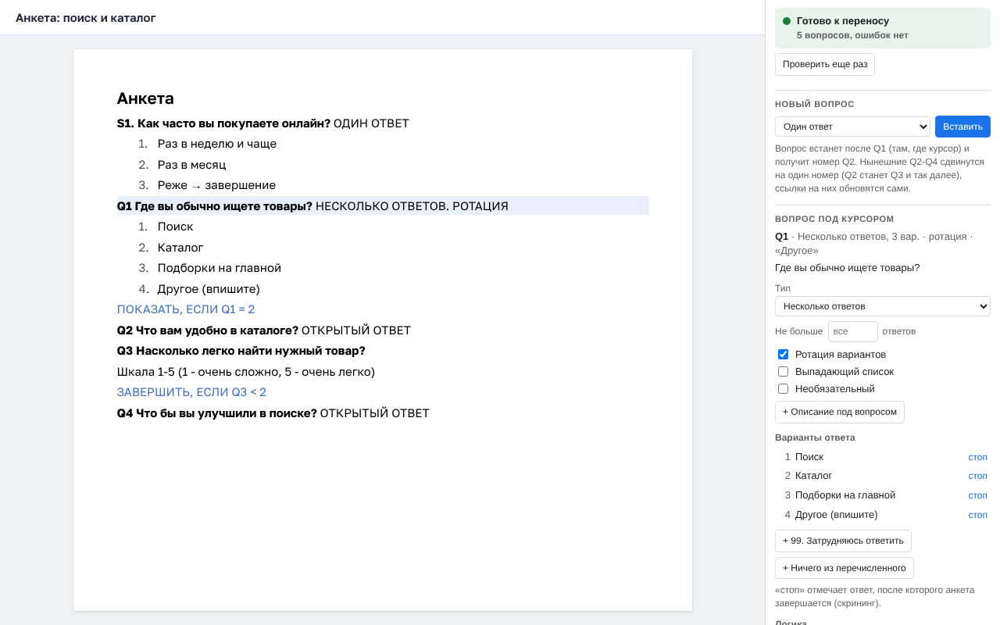

Анкеты прямо в Google Docs
Конструктор анкет: дополнение для Google Docs. Вставляет вопросы нужного типа, собирает условия показа и переходы и проверяет анкету по правилам шаблона, пока вы ее пишете. Ошибки видно сразу, а не после запуска опроса.
Доступ по приглашению автора. Если панель пишет «Нет доступа», напишите на savva.strahov@gmail.com.
Установка из Google Workspace Marketplace: ссылка появится после публикации

Панель справа: статус анкеты, вставка вопроса и настройки вопроса под курсором.
Что умеет
- Вставляет заготовки вопросов 17 типов: один и несколько ответов, шкала, NPS, матрица, ранжирование, тест 5 секунд, первый клик, дерево, сортировка карточек и другие.
- Настраивает вопрос галочками: ротация вариантов, необязательный вопрос, лимит ответов, ИИ-уточнения.
- Собирает условия показа и переходы из вариантов ответа, без ручного набора.
- Перенумеровывает вопросы и обновляет ссылки на них, сначала показывая, что изменится.
- Замечает, если после правки вариантов условие стало указывать на другой ответ.
- Проверяет анкету целиком и показывает, что поправить, со ссылкой на место в документе.
Все настройки записываются в текст документа по понятному шаблону, поэтому анкету можно читать, комментировать и править как обычный документ.
Как начать
- Установите дополнение из Google Workspace Marketplace.
- Откройте документ и выберите Расширения → Конструктор анкет → Открыть панель.
- В пустом документе нажмите Создать заготовку анкеты, в готовой анкете панель сразу покажет ее состояние.
Данные
In English
Konstruktor anket (Questionnaire Builder) is a Google Docs add-on that helps researchers write survey questionnaires. It inserts question templates, builds display and skip logic, renumbers questions and checks the whole questionnaire against the template rules while you write.
Access is by invitation from the author: to request it, email savva.strahov@gmail.com. The add-on works only with the document in which it is opened and checks the user's email address against the access list. It has no servers of its own and sends no data to the developer or third parties. See the Privacy Policy and Terms of Service.